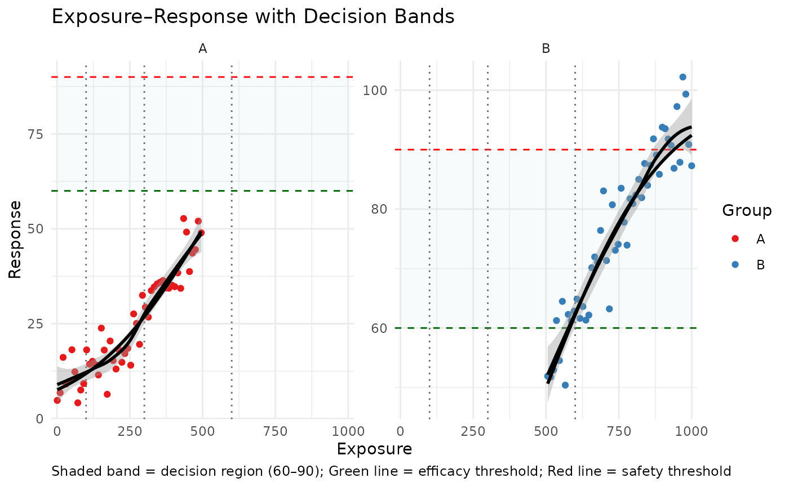
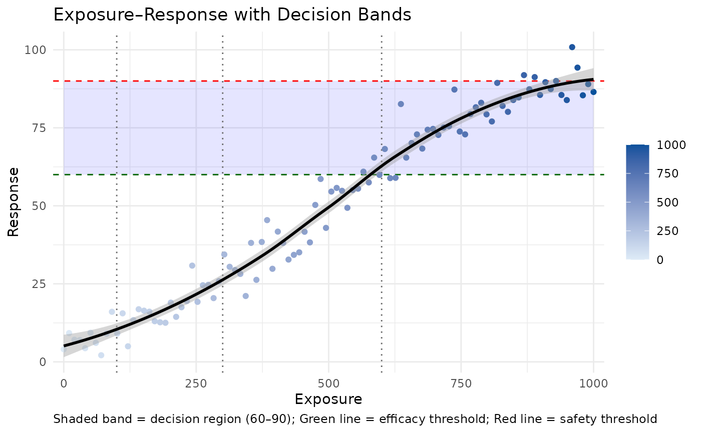

Creates a decision band plot showing exposure-response data with overlaid efficacy and safety thresholds. Useful for visualizing the range of exposures where efficacy is acceptable and safety is not compromised.
plot_decision_band(
data,
exposure_var,
response_var,
group_var = NULL,
efficacy_thresh,
safety_thresh,
dose_lines = NULL,
smooth = TRUE,
smooth_method = "loess",
ci = TRUE,
bin_exposure = FALSE,
n_bins = 4,
band_fill = "blue",
band_alpha = 0.1,
title = "Exposure–Response with Decision Bands",
x_lab = "Exposure",
y_lab = "Response",
predicted_var = NULL,
facet_var = NULL,
response_trans = NULL,
log_x = FALSE,
legend_title = NULL,
highlight_doses = NULL
)A data frame containing exposure-response data.
Column name for exposure (x-axis).
Column name for predicted or observed response (y-axis).
Optional column used for coloring points (e.g., treatment group).
Numeric or vector; efficacy threshold(s).
Numeric or vector; safety threshold(s).
Optional numeric vector of reference vertical lines (e.g., studied doses).
Logical; if TRUE, overlay a smoothed trend line.
Character; smoothing method for trend line (default = 'loess').
Logical; if TRUE, show a confidence ribbon.
Logical; if TRUE, bin exposure into quantiles.
Integer; number of bins when binning exposure.
Fill color for the decision band.
Alpha level (transparency) for decision band.
Plot title.
Label for the x-axis.
Label for the y-axis.
Optional column name for predicted values to overlay.
Optional column name for faceting by subgroup.
Optional transformation function for response (e.g., 'log', 'logit').
Logical; if TRUE, use log10 scale for x-axis.
Optional character string for the legend title.
Optional list of lists to highlight vertical dose regions (e.g., list(list(min=100, max=200))).
A ggplot object.
set.seed(123)
df <- data.frame(
exposure = seq(1, 1000, length.out = 100),
response = 100 / (1 + exp(-0.005 * (seq(0, 1000, length.out = 100) - 500))) + rnorm(100, 0, 5),
group = rep(c("A", "B"), each = 50),
pred = 100 / (1 + exp(-0.005 * (seq(0, 1000, length.out = 100) - 500)))
)
plot_decision_band(
df,
exposure_var = "exposure",
response_var = "response",
predicted_var = "pred",
group_var = "group",
efficacy_thresh = 60,
safety_thresh = 90,
dose_lines = c(100, 300, 600),
log_x = TRUE,
facet_var = "group",
response_trans = NULL,
bin_exposure = TRUE,
band_fill = "lightblue",
legend_title = "Group"
)
#> Scale for x is already present.
#> Adding another scale for x, which will replace the existing scale.
#> `geom_smooth()` using formula = 'y ~ x'

df <- data.frame(
exposure = seq(0, 1000, length.out = 100),
response = 100 / (1 + exp(-0.005 * (seq(0, 1000, length.out = 100) - 500))) + rnorm(100, 0, 5)
)
plot_decision_band(
df,
exposure_var = "exposure",
response_var = "response",
efficacy_thresh = 60,
safety_thresh = 90,
dose_lines = c(100, 300, 600)
)
#> Scale for x is already present.
#> Adding another scale for x, which will replace the existing scale.
#> `geom_smooth()` using formula = 'y ~ x'
